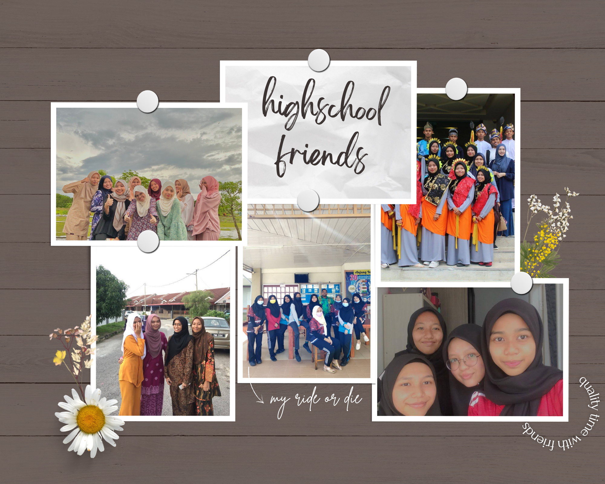
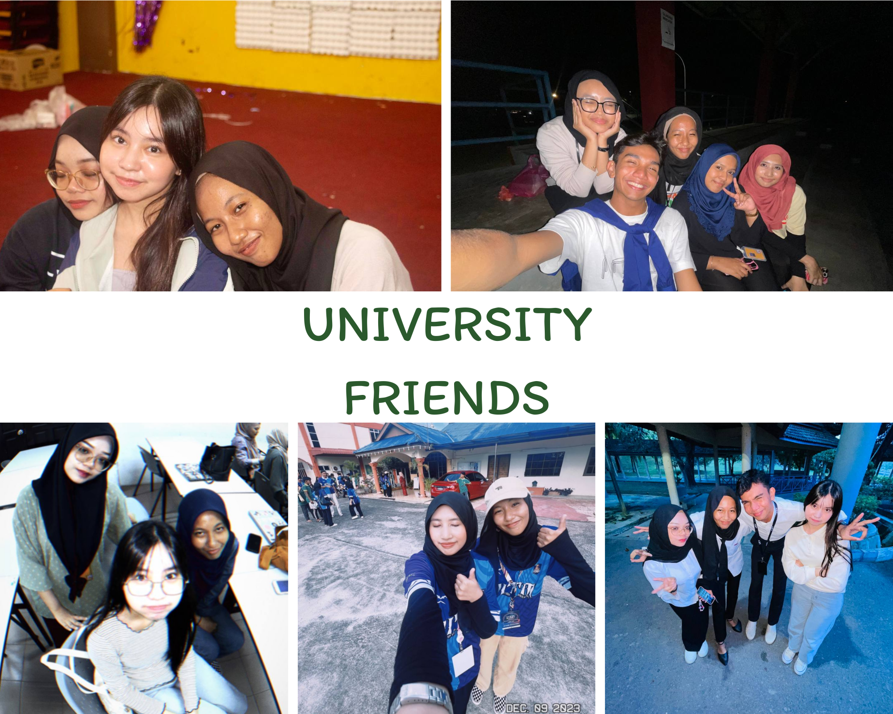

During my unforgettable years at SK Bandar Puteri Jaya in primary school, I was fortunate to be surrounded by incredible friends who made every moment truly special. Together, we forged enduring memories that still bring a smile to my face. Whether it was the joyful laughter echoing through the corridors during recess, the shared excitement of participating in school events and competitions, or the bond we formed while studying and helping each other with homework, every experience felt like a treasure. From adventurous playground escapades to heartfelt conversations under the shade of the trees in the schoolyard, our days were filled with camaraderie and shared adventures. SK Bandar Puteri Jaya will always hold a cherished place in my heart, not just for the education it provided, but for the lifelong friendships and beautiful memories that were cultivated within its walls.

My high school years at SMK Bandar Puteri Jaya were an unforgettable chapter of my life, largely due to the wonderful friendships I formed. The bonds we forged during those years became the foundation of some of my most cherished memories. From the bustling chatter in the classrooms to the spirited discussions in the cafeteria during lunch breaks, every day was an opportunity to create lasting connections. We navigated the challenges of academic pursuits together, studying late into the evenings, preparing for exams, and cheering each other on during extracurricular activities and sports events. The school corridors echoed with our laughter, and every school event, be it the annual talent show or the exhilaration of sports days, became a canvas for shared experiences and camaraderie. Our after-school hangouts, filled with stories, inside jokes, and endless conversations, added a layer of richness to our friendship. SMK Bandar Puteri Jaya remains not just a place of education but a treasure trove of memories, where lifelong friendships were cultivated amidst the joys and trials of high school life.

My days at UiTM Merbok, Kedah, were truly remarkable, largely because of the incredible friendships that flourished amidst our pursuit of higher education. Each day brought new adventures and lasting memories with friends who made the college experience unforgettable. From the lively discussions in lecture halls to the late-night study sessions in the library, our academic journey was intertwined with laughter, support, and shared goals. The campus buzzed with our energy during events, cultural festivals, and club activities, where we celebrated diversity and forged strong bonds. Whether it was exploring the serene landscapes around Kedah together, organizing group projects, or simply enjoying downtime at our favorite hangouts, every moment felt precious. Our friendship became a sanctuary of support during the challenges of assignments and exams, and it was in these moments that our connections grew deeper. The memories we created at UiTM Merbok will forever hold a special place in my heart, representing not just a phase of academic growth but a time of invaluable friendships and lifelong lessons.